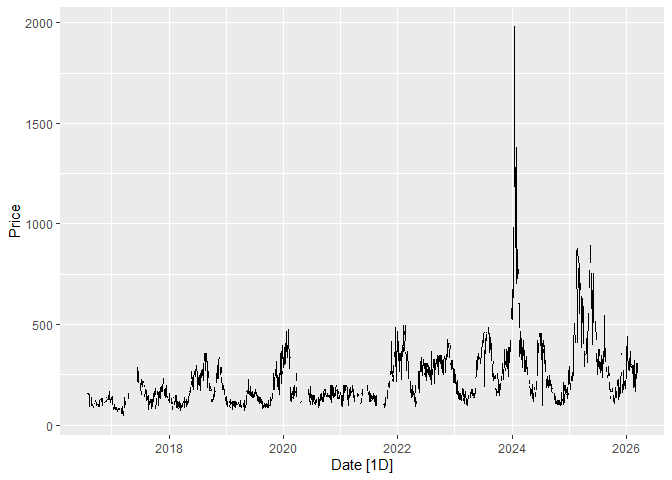
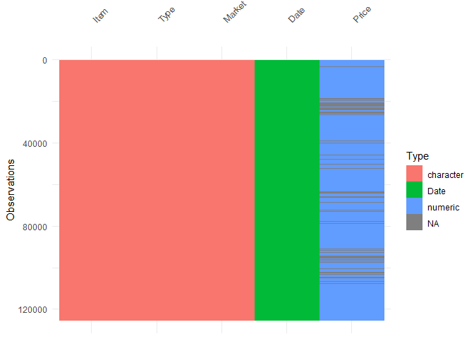

Installation
You can install the development version of vegetablesSriLanka from GitHub with:
# install.packages("pak")
pak::pak("thiyangt/vegetablesSriLanka")Load data
library(vegetablesSriLanka)
#> Registered S3 method overwritten by 'tsibble':
#> method from
#> as_tibble.grouped_df dplyr
data("vegetables.srilanka")
head(vegetables.srilanka)
#> # A tibble: 6 × 5
#> Date Item Type Market Price
#> <date> <chr> <chr> <chr> <dbl>
#> 1 2016-08-01 Beans Retail Dambulla 165
#> 2 2016-08-02 Beans Retail Dambulla 190
#> 3 2016-08-03 Beans Retail Dambulla 190
#> 4 2016-08-04 Beans Retail Dambulla 190
#> 5 2016-08-05 Beans Retail Dambulla 190
#> 6 2016-08-08 Beans Retail Dambulla 190
tail(vegetables.srilanka)
#> # A tibble: 6 × 5
#> Date Item Type Market Price
#> <date> <chr> <chr> <chr> <dbl>
#> 1 2026-03-03 Tomato Wholesale Pettah 120
#> 2 2026-03-04 Tomato Wholesale Pettah 120
#> 3 2026-03-05 Tomato Wholesale Pettah 80
#> 4 2026-03-06 Tomato Wholesale Pettah 90
#> 5 2026-03-09 Tomato Wholesale Pettah 120
#> 6 2026-03-10 Tomato Wholesale Pettah 120Fill missing gaps
filled <- fillgaps_vegetable_prices(
data = vegetables.srilanka,
item = "Carrot",
market = "Dambulla",
type = "Retail"
)
filled
#> # A tsibble: 3,509 x 5 [1D]
#> Date Item Type Market Price
#> <date> <chr> <chr> <chr> <dbl>
#> 1 2016-08-01 Carrot Retail Dambulla 155
#> 2 2016-08-02 Carrot Retail Dambulla 155
#> 3 2016-08-03 Carrot Retail Dambulla 150
#> 4 2016-08-04 Carrot Retail Dambulla 145
#> 5 2016-08-05 Carrot Retail Dambulla 145
#> 6 2016-08-06 <NA> <NA> <NA> NA
#> 7 2016-08-07 <NA> <NA> <NA> NA
#> 8 2016-08-08 Carrot Retail Dambulla 125
#> 9 2016-08-09 Carrot Retail Dambulla 135
#> 10 2016-08-10 Carrot Retail Dambulla 150
#> # ℹ 3,499 more rowsPlot data
plot_vegetable_prices(
data = vegetables.srilanka,
item = "Carrot",
market = "Dambulla",
type = "Retail"
)
Data Quality Analysis
visualize_missingness(
data = vegetables.srilanka,
group_var = "Item",
target_var = "Price"
)
#> $data_structure